۱سرور آماده دارید
روی سرور تازهٔ Ubuntu 24.04 amd64 از طریق SSH اجرا کنید. curl، Python 3 و venv اگر نباشند خودکار نصب میشوند.
bash <(curl -fsSL https://raw.githubusercontent.com/sabi-karami/SABI-ALL-VPN/v1.0.0-beta.4/bootstrap.sh)۲سرور در AWS ساخته شود
روی Linux، WSL یا macOS با حساب AWS احراز هویتشده. پیشنیازها خودکار نصب میشوند.
bash <(curl -fsSL https://raw.githubusercontent.com/sabi-karami/SABI-ALL-VPN/v1.0.0-beta.4/bootstrap.sh) --awsCREATE هزینهزا است (EC2، EBS، IPv4، ترافیک). سقف هزینهٔ خودکار ندارد.نقشهٔ اتصالها
۳۰ کارت در پنج گروه با پورت پیشفرض. پیشفرض ۲۷ کارت است؛ PPTP و SOCKS/HTTP خام فقط با انتخاب آگاهانه.
مستقیم9
- VLESS · REALITY / Xray
443 / TCP - VLESS · REALITY / sing-box
3443 / TCP - Trojan · TLS
8443 / TCP - Shadowsocks · 2022
8388 / TCP + UDP - Hysteria 2
443 / UDP - TUIC
8443 / UDP - AnyTLS
11443 / TCP - NaiveProxy
10443 / TCP - ShadowTLS v3 + SS2022
9443 / TCP
پشت کلودفلر4
- VLESS · WS / CDN
2053 / TCP - VLESS · XHTTP / CDN
2083 / TCP - VMess · WS / CDN
2087 / TCP - Trojan · WS / CDN
2096 / TCP
ویپیان کلاسیک10
- WireGuard
51820 / UDP - AmneziaWG
51821 / UDP - OpenVPN · UDP
1194 / UDP - OpenVPN · TCP
1194 / TCP - IKEv2 / IPsec
500 + 4500 / UDP - L2TP / IPsec
500 + 4500 / UDP - IPsec · XAuth
500 + 4500 / UDP - OpenConnect / AnyConnect
4443 / TCP + UDP - SSTP
5555 / TCP - SoftEther VPN
5555 / TCP
ابزارهای دیگر4
- MTProto · Telegram
4433 / TCP - Tor · obfs4 Bridge
7443 / TCP - SSH · SOCKS Tunnel
22 / TCP - dnstt · DNS Tunnel
53 / UDP
اختیاری، پیشفرض خاموش3
- SOCKS5
1080 / TCP - HTTP Proxy
1080 / TCP - PPTP
1723 / TCP + GRE
پنل خصوصی فارسی
کلیک روی هر مقدار = کپی. رمزها پیشفرض پنهاناند، آموزش هر روش و دانلود فایلها بعد از ورود.

مسیر نصب
پس از پرسشهای اولیه، نصب در سرویس systemd ادامه مییابد و با --resume از آخرین checkpoint ادامه پیدا میکند.

پیش از نصب بدانید
صادقانه: این چیزها را تضمین نمیکنیم.
هنوز آزمایشی است
نصب کامل fresh-host و AWS انتهابهانتهای این نسخه هنوز انجام نشده. اول روی ماشین disposable امتحان کنید.
فقط سرور اختصاصی
Ubuntu 24.04 amd64 تازه. روی سروری که سرویس دیگری دارد اجرا نکنید؛ rollback کامل وجود ندارد.
رازها خصوصی میمانند
هیچ رمز واقعی در مخزن نیست. ZIP خصوصی رمزنگاریشده نیست؛ هرگز آن را عمومی نکنید.
بدون تضمین عبور
فیلترینگ، DNS، سیاست دیتاسنتر و کلاینتها متفاوتاند. وضعیت پنل تست اتصال از اینترنت شما نیست.
IPv4 در اولویت
مسیر IPv6 در فایلهای WG/AWG تنظیم نشده؛ IPv6 را روی کلاینت مدیریت کنید. تضمین عدم نشت نیست.
پنل read-only
فروش اشتراک، ساخت کاربر و حسابداری مصرف ندارد؛ برای مالک سرور طراحی شده است.
مستندات
همهچیز در GitHub.